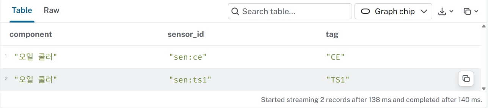
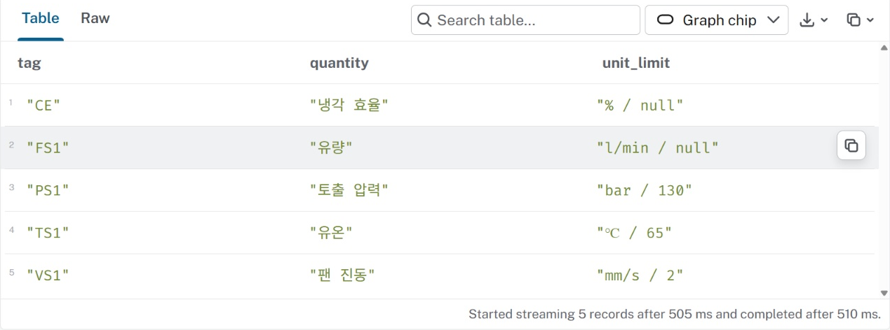
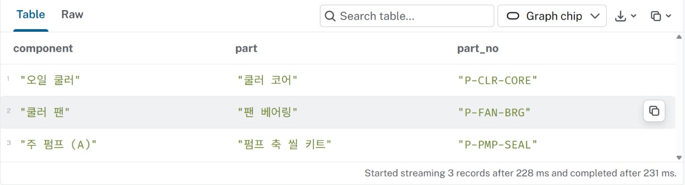
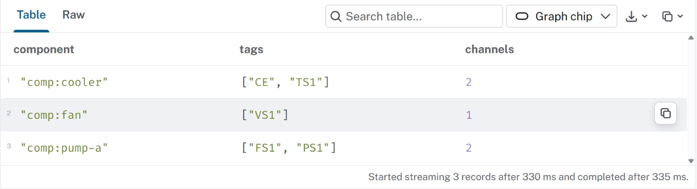

HYD · 실습 가이드관계를 따라 센서와 부품 조회하기
연결된 대상을 확인하고, 결과의 근거를 원자료와 대조합니다.
01 예제 준비하기
VS Code 터미널에서 실행하세요.
python prepare_example.py
예제 준비 완료: 노드 20개 · 관계 19개가 표시됩니다. 이 예제는 HYD-01 한 대의 설비 구성입니다.
python lab_db.py
Protocol에서 bolt://를 선택하고, Connection URL에는 터미널 주소의 127.0.0.1:포트 부분만 넣으세요. Database user는 neo4j, Password는 비워 두고 Connect를 누릅니다.
02 쿨러에서 센서 찾기
Browser 입력칸에 아래 질의를 넣고 Run을 누르세요. 조회_작성.cypher에도 저장합니다.
MATCH (c:Component {id:'comp:cooler'})-[:MONITORED_BY]->(s:Sensor)
RETURN c.id, c.name, s.id, s.tag;센서 TS1과 CE 두 행이 나옵니다. 반복된 쿨러 ID는 같은 출발점입니다.
관계에 변수 r을 붙이고 c, r, s를 반환하도록 바꿔 표와 그래프의 대상을 비교하세요.

같은 쿨러에서 센서 CE·TS1 두 행 확인 · 누르면 크게 보기03 설비에서 물리량·부품 따라가기
HYD-01에서 구성요소 → 센서 → StateVariable까지 연결해 태그·물리량·단위·한계를 조회하세요. 한계가 있는 행만 남겼을 때 빠지는 항목을 기록합니다.
센서는 5개이며 한계가 없는 CE·FS1도 원래 조회에는 포함됩니다. 값 없음과 0을 구별하세요.

태그 5개와 물리량·단위·한계 확인. unit_limit은 단위 / 한계를 함께 표시한 열 · 누르면 크게 보기이번에는 구성요소의 USES_PART 관계로 부품과 partNo를 조회하세요.
쿨러 코어 P-CLR-CORE, 펌프 축 씰 키트 P-PMP-SEAL, 팬 베어링 P-FAN-BRG의 세 연결을 원자료와 대조합니다.

구성요소별 교체 부품과 품번 세 연결 확인 · 누르면 크게 보기04 집계와 원래 행 비교하기
구성요소별로 서로 다른 센서를 세고 원래 센서 ID 목록과 비교하세요.
쿨러 2개, 주 펌프 2개, 팬 1개입니다. 센서까지 연결되는 MATCH에는 센서가 없는 구성요소가 나오지 않습니다.
조회_기록.md의 표에 원래 목록·직접 센 수·질의 결과를 기록합니다.

태그 목록과 집계 비교: 쿨러 2개·팬 1개·주 펌프 2개 · 누르면 크게 보기05 저장하기
질의와 기록을 결과/에 저장하고 다시 열어 확인하세요. 보관할 결과는 재부팅 전에 USB 또는 개인 클라우드로 복사합니다.
다음 포털 탐색은 별도 시작본으로 엽니다.